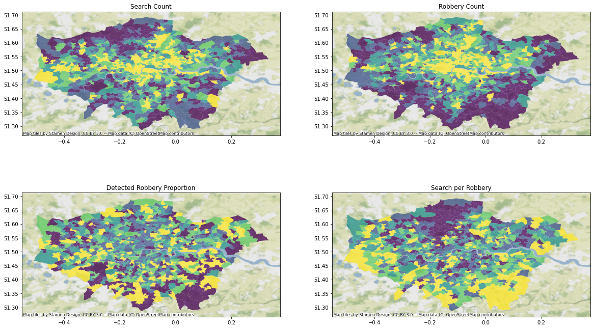
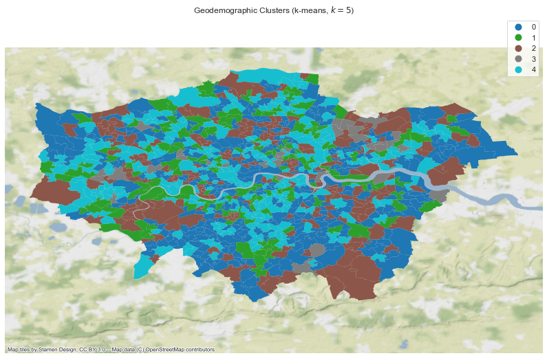

#both of the below are used to read your directory
import glob
import os
#core DS libraries
import pandas as pd
from sklearn.cluster import KMeans, AgglomerativeClustering
import numpy as np
#graphic libraries
import matplotlib.pyplot as plt
from matplotlib import colors
import seaborn as sns
#geographic analysis
import geopandas
from pysal.explore import esda # Exploratory Spatial analytics
from pysal.lib import weights
import contextily # Background tiles
from pysal.viz import splot
from splot.esda import plot_moran
#positive outcomes to obtain detection rate
positive_outcomes = [
'Offender given conditional discharge', 'Offender fined',
'Offender given a drugs possession warning',
'Court result unavailable', 'Local resolution',
'Offender given community sentence',
'Offender given penalty notice', 'Offender given a caution',
'Offender sent to prison', 'Court case unable to proceed',
'Defendant found not guilty',
'Offender given suspended prison sentence',
'Awaiting court outcome', 'Offender otherwise dealt with',
'Defendant sent to Crown Court', 'Offender deprived of property',
'Offender ordered to pay compensation',
'Offender given absolute discharge',
'Formal action is not in the public interest',
'Suspect charged as part of another case']Amongst stuffing my face with wine and cheese, I’ve used this Christmas break to learn more about geospatial modelling in Python.
This blog post is largely intended for my reference and to act as a useful example for others…as such, it may be messy! I’ll try and tidy it into a Medium post in the coming weeks.
Space is an often disregarded dimension of modelling within policing research. As per Tobler’s first law of geography, “everything is related to everything else, but near things are more related than distant things”, and this is probably especially true of crime, that tenders to cluster in both time and space…treating your models as not having distinct physical locations that influence how they behave is likely to miss crucial information.
Nearly all of the below is adapted from a fantastic work in progress book, Geographic Data Science with PySAL and the PyData Stack - I’ve found it hugely helpful, and the code examples are very approachable. I’d also recommend browsing the Pysal documentation.
All of the below is based on public data: - Police recorded crime and searches from January 2019 through October 2020 (data.police.uk) - London MSOA geographic and demographic data (MOPAC)
The key libraries used are: - Standard Python libraries as included in Anaconda (statsmodels, pandas, sklearn, seaborn) - Geopandas - allowing you to read, write, and plot spatial data - Pysal - a collection of modules for geospatial data science
Spatial Data
We begin by importing our spatial border data. Spatial coordinates are just coordinates, so without understanding what those coordinates mean (for instance, where you are in a city, or in the world, at what altitude, etc), they’re essentially points on a chart.
For us, this is provided by the Mayor’s Office for Policing and Crime, and also conveniently contains some area characteristics. We use Geopandas to read the file.
Geospatial modelling relies on assigning events to a unit of space. You could theoretically make this as detailed as possible - for instance, meter squares - but given we’re going to analyse how our units are interconnected, that’s probably not computationally feasible (if everything is connected to everything, you’re going to need a really big computer). You’ll need to reach a suitable compromise. Helpfully, the UK government provides various statistical units, including border coordinates, for download. Lower Super Output Areas (LSOAs) and Middle Super Output Areas (MSOAs) contain populations of between 5,000 and 7,200, and as such should be (partly) comparable.
Geospatial data will use a specific Coordinate Reference System, or CRS which will affect how your data is processed. Make sure you’re using the right one - worldwide data that assumes it is on a sphere will behave very differently to data from a specific country on a flat plane.
UK policing data often uses National Grid Easting/Northing coordinates, rather than the more common Lat/Longs. Daata.Police.uk comes pre-processed into lat/long coordinates. Thankfully, whichever you have, geopandas can easily convert (or “re-project”) to another system.
msoas = geopandas.read_file("statistical-gis-boundaries-london/MapInfo/MSOA_2011_London_gen_MHW.tab")
msoas = msoas.to_crs(epsg=4326)C:\Users\Admin\Anaconda3\envs\geospatial\lib\site-packages\geopandas\geodataframe.py:422: RuntimeWarning: Sequential read of iterator was interrupted. Resetting iterator. This can negatively impact the performance.
for feature in features_lst:Our data on both stop and search and robberies was manually downloaded from data.police.uk, and extracted into our working folder. Given this is then returned into a folder per month, I have written a series of helper functions to read the files, assign them to an MSOA, and combine them into a total per MSOA.
To assign to an MSOA, we use a “spatial join”: like a normal table join (think vlookup in Excel), this connects elements from one table, to elements from another, via a common column. In our case, the common column is the geographic location: which MSOA is our search/crime located in.
Crime data from data.police.uk is separated into “major” crime types, which is very helpful for anonymisation (we can’t figure out who the victim was if we don’t know specific crime types), but does mean that all violent and sexual crime is agglomerated into one - given I think it’s unlikely searches deter sexual offences, that’s unhelpful. As such, we’ll focus on robbery, which is disaggregated. This isn’t ideal, but robbery remains a serious, violent, high priority crime, and as such you’d hope they are connected, and robbery might in fact be a rough proxy for overall violence.
def read_and_add(file_path):
df = pd.read_csv(file_path)
robberies = df[df["Crime type"] == 'Robbery']
#we create a geopandas object that uses the lat/long coordinates, using the appropriate CRS code.
robberies = geopandas.GeoDataFrame(robberies, geometry=geopandas.points_from_xy(robberies.Longitude, robberies.Latitude), crs="epsg:4326")
detected_mask = robberies["Last outcome category"].isin(positive_outcomes)
# identify which crimes resulted in a detected outcome
robberies.loc[detected_mask, "Detected"] = 1
detected_mask = robberies["Last outcome category"].isin(positive_outcomes)
detected_df = robberies[detected_mask]
robberies.loc[detected_mask, "Detected"] = 1
dfsjoin_r = geopandas.sjoin(msoas, robberies) #Spatial join Points to polygons
dfsjoin_d = geopandas.sjoin(msoas, detected_df) #Spatial join Points to polygons
#aggregate to a pivot table that will count our outputs.
pivot_r = pd.pivot_table(dfsjoin_r,index='MSOA11CD',fill_value=0,columns='Crime type',aggfunc={'Crime type':len})
pivot_d = pd.pivot_table(dfsjoin_d,index='MSOA11CD',fill_value=0,columns='Crime type',aggfunc={'Crime type':len})
all_pivot = pivot_r.join(pivot_d, rsuffix="detected").reset_index()
return all_pivot.fillna(0)def read_and_add_search(file_path):
df = pd.read_csv(file_path)
df = geopandas.GeoDataFrame(df, geometry=geopandas.points_from_xy(df.Longitude, df.Latitude), crs="epsg:4326")
dfsjoin = geopandas.sjoin(msoas, df) #Spatial join Points to polygons
pivot_d = dfsjoin.groupby(["MSOA11CD"])['Object of search'].count()
#pivot_d = pd.pivot_table(dfsjoin,index='MSOA11CD',fill_value=0,columns='Object of search', aggfunc=len)
return pd.DataFrame(pivot_d.fillna(0)).reset_index()def merge_dfs(list_of_df):
initial_df = list_of_df[0]
remaining = list_of_df[1:]
for pivot in remaining:
initial_df.groupby("MSOA11CD", as_index=False).sum()
initial_df = pivot.merge(initial_df.groupby("MSOA11CD", as_index=False).sum(), how="outer")
#initial_df.columns=["MSOA11CD","Robbery","Detected"]
print ("dataframe length is " + str(initial_df.shape[0]))
return initial_df#we iterate over all files and subfolders in our data directory, and use the appropriate helper functions based on their last characters.
list_of_pivot = []
list_of_searches = []
rootdir = os.getcwd()
for subdir, dirs, files in os.walk("data"):
for file in files:
filepath = subdir + os.sep + file
if filepath.endswith("street.csv"):
list_of_pivot.append(read_and_add(filepath))
if filepath.endswith("search.csv"):
list_of_searches.append(read_and_add_search(filepath))
#now we concatenate all our individual dataframes into a single one
print("aggregating robbery")
final_pivot = merge_dfs(list_of_pivot)
print("aggregating searches")
final_search = merge_dfs(list_of_searches)aggregating robberyC:\Users\Admin\Anaconda3\envs\geospatial\lib\site-packages\pandas\core\generic.py:3889: PerformanceWarning: dropping on a non-lexsorted multi-index without a level parameter may impact performance.
obj = obj._drop_axis(labels, axis, level=level, errors=errors)dataframe length is 1705
aggregating searches
dataframe length is 1953#finally, merge those into a single pivot with the sum of all incidents during our data, by MSOA.
final_pivot.columns=["MSOA11CD","Robbery","Detected"]
final_pivot = final_pivot.groupby("MSOA11CD").sum()
final_search = final_search.groupby("MSOA11CD").sum()
final_join = final_search.join(final_pivot).reset_index().copy()
final_join.columns=["MSOA11CD", "search_count", "robbery_count","detected_robbery"]final_join| MSOA11CD | search_count | robbery_count | detected_robbery | |
|---|---|---|---|---|
| 0 | E02000001 | 268 | 37 | 0.0 |
| 1 | E02000002 | 173 | 38 | 2.0 |
| 2 | E02000003 | 294 | 115 | 7.0 |
| 3 | E02000004 | 216 | 19 | 0.0 |
| 4 | E02000005 | 132 | 61 | 1.0 |
| ... | ... | ... | ... | ... |
| 978 | E02006927 | 581 | 68 | 7.0 |
| 979 | E02006928 | 638 | 89 | 5.0 |
| 980 | E02006929 | 1373 | 146 | 7.0 |
| 981 | E02006930 | 168 | 56 | 2.0 |
| 982 | E02006931 | 393 | 105 | 5.0 |
983 rows × 4 columns
final_join.sum()MSOA11CD E02000001E02000002E02000003E02000004E02000005E...
search_count 477668
robbery_count 60093
detected_robbery 3054
dtype: objectOur final file then, contains nearly 500,000 searches and just over 60,000 robberies (of which a suspect was found in around 3,000) across London’s 938 MSOAs.
msoas["MSOA11CD"] = msoas["MSOA11CD"].astype("string")
final_join["MSOA11CD"] = final_join["MSOA11CD"].astype("string")msoas = msoas.merge(final_join, on=["MSOA11CD"])We then re-combine this with our geometry file, before calculating a proportion of robbery detected figure, and a search per robbery rate - the final table is below.
msoas["robbery_solve"] = msoas["detected_robbery"] / msoas["robbery_count"]
msoas["search_rate"] = msoas["search_count"] / msoas["robbery_count"]msoas.index = msoas["MSOA11NM"]The data is now processed. Now is probably a good time to write this to a file to retrieve it in the future.
msoas.to_file("msoas.shp")
msoas| MSOA11CD | MSOA11NM | LAD11CD | LAD11NM | RGN11CD | RGN11NM | UsualRes | HholdRes | ComEstRes | PopDen | Hholds | AvHholdSz | geometry | search_count | robbery_count | detected_robbery | robbery_solve | search_rate | |
|---|---|---|---|---|---|---|---|---|---|---|---|---|---|---|---|---|---|---|
| MSOA11NM | ||||||||||||||||||
| City of London 001 | E02000001 | City of London 001 | E09000001 | City of London | E12000007 | London | 7375 | 7187 | 188 | 25.5 | 4385 | 1.6 | MULTIPOLYGON (((-0.09676 51.52325, -0.09644 51... | 268 | 37 | 0.0 | 0.000000 | 7.243243 |
| Barking and Dagenham 001 | E02000002 | Barking and Dagenham 001 | E09000002 | Barking and Dagenham | E12000007 | London | 6775 | 6724 | 51 | 31.3 | 2713 | 2.5 | POLYGON ((0.14811 51.59678, 0.14809 51.59640, ... | 173 | 38 | 2.0 | 0.052632 | 4.552632 |
| Barking and Dagenham 002 | E02000003 | Barking and Dagenham 002 | E09000002 | Barking and Dagenham | E12000007 | London | 10045 | 10033 | 12 | 46.9 | 3834 | 2.6 | POLYGON ((0.15065 51.58306, 0.14841 51.58075, ... | 294 | 115 | 7.0 | 0.060870 | 2.556522 |
| Barking and Dagenham 003 | E02000004 | Barking and Dagenham 003 | E09000002 | Barking and Dagenham | E12000007 | London | 6182 | 5937 | 245 | 24.8 | 2318 | 2.6 | POLYGON ((0.18511 51.56480, 0.18403 51.56391, ... | 216 | 19 | 0.0 | 0.000000 | 11.368421 |
| Barking and Dagenham 004 | E02000005 | Barking and Dagenham 004 | E09000002 | Barking and Dagenham | E12000007 | London | 8562 | 8562 | 0 | 72.1 | 3183 | 2.7 | POLYGON ((0.14990 51.56807, 0.15078 51.56778, ... | 132 | 61 | 1.0 | 0.016393 | 2.163934 |
| ... | ... | ... | ... | ... | ... | ... | ... | ... | ... | ... | ... | ... | ... | ... | ... | ... | ... | ... |
| Greenwich 034 | E02006927 | Greenwich 034 | E09000011 | Greenwich | E12000007 | London | 8315 | 8241 | 74 | 33.0 | 3338 | 2.5 | POLYGON ((0.02900 51.46779, 0.02995 51.46592, ... | 581 | 68 | 7.0 | 0.102941 | 8.544118 |
| Greenwich 035 | E02006928 | Greenwich 035 | E09000011 | Greenwich | E12000007 | London | 7341 | 6410 | 931 | 136.0 | 2977 | 2.2 | MULTIPOLYGON (((-0.00961 51.48366, -0.00979 51... | 638 | 89 | 5.0 | 0.056180 | 7.168539 |
| Greenwich 036 | E02006929 | Greenwich 036 | E09000011 | Greenwich | E12000007 | London | 7490 | 7489 | 1 | 29.4 | 3333 | 2.2 | POLYGON ((0.01619 51.49578, 0.01854 51.49498, ... | 1373 | 146 | 7.0 | 0.047945 | 9.404110 |
| Greenwich 037 | E02006930 | Greenwich 037 | E09000011 | Greenwich | E12000007 | London | 6561 | 6557 | 4 | 75.6 | 2876 | 2.3 | POLYGON ((0.00866 51.48917, 0.00837 51.48877, ... | 168 | 56 | 2.0 | 0.035714 | 3.000000 |
| Greenwich 038 | E02006931 | Greenwich 038 | E09000011 | Greenwich | E12000007 | London | 9186 | 8973 | 213 | 46.1 | 4113 | 2.2 | POLYGON ((-0.00201 51.48155, -0.00136 51.48145... | 393 | 105 | 5.0 | 0.047619 | 3.742857 |
983 rows × 18 columns
Analysis
Let’s start exploring our data. Before doing anything, we’ll use Pysal to create “spatial weights” - this let’s us understand our objects in space, and how they interact. There are a myriad of different methods, but we’ll just pick the 8 nearest MSOAs in space.
# Generate W from the GeoDataFrame
w = weights.distance.KNN.from_dataframe(msoas, k=8)
w.neighbors['City of London 001']['Islington 023',
'Southwark 002',
'Islington 022',
'Hackney 027',
'Hackney 026',
'Southwark 006',
'Southwark 003',
'Southwark 009']# Row-standardization
w.transform = 'R'We also create a spatial “lag” for our key values - this is one of the most straightforward measures of spatial relationships, and captures the products and weights of our value in neighbouring observations. Essentially, it’s the value of our metric, weighted by the value of the metric in neighbourhing observations - so clusters will expect to be high, while a single high value surrounded by low values will be diminished.
msoas['w_search_count'] = weights.spatial_lag.lag_spatial(w, msoas['search_count'])
msoas['w_robbery_count'] = weights.spatial_lag.lag_spatial(w, msoas['robbery_count'])
msoas['w_rate'] = weights.spatial_lag.lag_spatial(w, msoas['search_rate'])
Let’s start by mapping out our key crime and search figures, and seeing if anything stands out.
f, axs = plt.subplots(nrows=2, ncols=2, figsize=(20, 12))
msoas.plot(column='search_count',
cmap='viridis',
scheme='quantiles',
k=5,
edgecolor='white',
linewidth=0.,
alpha=0.75,
legend=False,
legend_kwds={"loc": 2},
ax=axs[0,0]
)
axs[0,0].title.set_text('Search Count')
msoas.plot(column='robbery_count',
cmap='viridis',
scheme='quantiles',
k=5,
edgecolor='white',
linewidth=0.,
alpha=0.75,
legend=False,
legend_kwds={"loc": 2},
ax=axs[0,1]
)
axs[0,1].title.set_text('Robbery Count')
msoas.plot(column='robbery_solve',
cmap='viridis',
scheme='quantiles',
k=5,
edgecolor='white',
linewidth=0.,
alpha=0.75,
legend=False,
legend_kwds={"loc": 2},
ax=axs[1,0]
)
axs[1,0].title.set_text('Detected Robbery Proportion')
msoas.plot(column='search_rate',
cmap='viridis',
scheme='quantiles',
k=5,
edgecolor='white',
linewidth=0.,
alpha=0.75,
legend=False,
legend_kwds={"loc": 2},
ax=axs[1,1]
)
#contextily pulls a background tile from online providers
axs[1,1].title.set_text('Search per Robbery')
for ax in axs.reshape(-1):
contextily.add_basemap(ax,
crs=msoas.crs,
source=contextily.providers.Stamen.TerrainBackground)
#ax1.set_axis_off()
#ax2.set_axis_off()
There are a few apparently spatial trends at play: - Searches and robberies seem most common in central London, though searches also seem to cluster on the Western area of the city - The proportion of robberies that are detected seems to be scaterred pretty randomly - The rate of search per robbery seems to form a “U” shape around the soutehrn side of the city, with the Northern edge standing out as potentially “under-policed”
Let’s ignore the spatial dimension for a second, and just create a correlation heatmap. This should let us identify any commonalities between our measured characteristics
corr_cols = ['UsualRes', 'HholdRes', 'ComEstRes', 'PopDen', 'Hholds', 'AvHholdSz',
'search_count', 'robbery_count',
'robbery_solve', 'search_rate',
'w_search_count', 'w_robbery_count','w_rate']
sns.set_theme(style="white")
cmap = sns.diverging_palette(230, 20, as_cmap=True)
plt.figure(figsize=(16, 6))
# define the mask to set the values in the upper triangle to True
mask = np.triu(np.ones_like(msoas[corr_cols].corr(), dtype=np.bool))
heatmap = sns.heatmap(msoas[corr_cols].corr(), mask=mask, vmin=-1, vmax=1, annot=True, cmap=cmap)The good news is that search and robbery counts are closely correlated: those MSOAs where most robberies occur also see the most searches.
There is also a weak positive correlation (0.3) between commercial households and robberies - this is probably due to some combination of high footfall and affuluence.
There is also a negative relationship between the spatial lag of robberies, and the average household size - I’m not quite sure how to interpret this. Potentially those areas with lots of focused large households are large nexuses of robbery?
Let’s go a bit further by building a scatter plot between robbery and search counts.
sns.scatterplot(x="search_count", y="robbery_count", data=msoas)It’s a bit of a mess. Most of our robberies are focused on the lower angle, with a few huge outliers. This might benefit from a log transformaton - keeping the key characteristics the same, but normalising our distribution and making the relationship linear.
sns.scatterplot(x=np.log(msoas["search_count"]), y=np.log(msoas["robbery_count"]), data=msoas)As planned, a lot better - this suggests a linear relationship between both variables, and they should now be normally distributed, allowing us to model them.
sns.displot(x=np.log(msoas["search_rate"]), kde=True)Spatial Structures
To identify whether geography plays a role in how our values change, we’ll contrast the values to their spatial lag - the local value, impacted by their neighbours. This should smooth out any outliers, and let us get a general value per area, rather than by MSOA.
f, axs = plt.subplots(nrows=3, ncols=2, figsize=(20, 12))
msoas.plot(column='search_count',
cmap='viridis',
scheme='quantiles',
k=5,
edgecolor='white',
linewidth=0.,
alpha=0.75,
legend=False,
legend_kwds={"loc": 2},
ax=axs[0,0]
)
axs[0,0].title.set_text('Search Count')
msoas.plot(column='w_search_count',
cmap='viridis',
scheme='quantiles',
k=5,
edgecolor='white',
linewidth=0.,
alpha=0.75,
legend=False,
legend_kwds={"loc": 2},
ax=axs[0,1]
)
axs[0,1].title.set_text('Spatial Lag - Search Count')
msoas.plot(column='robbery_count',
cmap='viridis',
scheme='quantiles',
k=5,
edgecolor='white',
linewidth=0.,
alpha=0.75,
legend=False,
legend_kwds={"loc": 2},
ax=axs[1,0]
)
axs[1,0].title.set_text('Robbery Count')
msoas.plot(column='w_robbery_count',
cmap='viridis',
scheme='quantiles',
k=5,
edgecolor='white',
linewidth=0.,
alpha=0.75,
legend=False,
legend_kwds={"loc": 2},
ax=axs[1,1]
)
axs[1,1].title.set_text('Spatial Lag - Robbery Count')
msoas.plot(column='search_rate',
cmap='viridis',
scheme='quantiles',
k=5,
edgecolor='white',
linewidth=0.,
alpha=0.75,
legend=False,
legend_kwds={"loc": 2},
ax=axs[2,0]
)
axs[2,0].title.set_text('Search per Robbery')
msoas.plot(column='w_rate',
cmap='viridis',
scheme='quantiles',
k=5,
edgecolor='white',
linewidth=0.,
alpha=0.75,
legend=False,
legend_kwds={"loc": 2},
ax=axs[2,1]
)
axs[2,1].title.set_text('Spatial Lag - Search Rate')
for ax in axs.reshape(-1):
contextily.add_basemap(ax,
crs=msoas.crs,
source=contextily.providers.Stamen.TerrainBackground)
#ax1.set_axis_off()
#ax2.set_axis_off()Our spatial weights enable us to clearly identy trends in space: - the search count and robbery count is now far more focused on centralon London, with the exception of a few pockets - the north of London cluster stands out more distinctly as a location where the rate of search per robbery is distinctively lower
Clustering
As an alternative method for exploring our data, we’ll use some machine learning techniques to undertake some clustering. We’ll be using K Means clustering (which focuses on the mean of all our values, and picks the most similar other MSOAs) - given we’re now focusing on modelling, we’ll use the log values.
msoas['ln_search_count'] = np.log(msoas['search_count'])
msoas['ln_robbery_count'] = np.log(msoas['robbery_count'])
msoas['ln_rate'] = np.log(msoas['search_rate'])
msoas['w_search_count'] = weights.spatial_lag.lag_spatial(w, msoas['ln_search_count'])
msoas['w_robbery_count'] = weights.spatial_lag.lag_spatial(w, msoas['w_robbery_count'])
msoas['w_rate'] = weights.spatial_lag.lag_spatial(w, msoas['w_rate'])
w = weights.distance.KNN.from_dataframe(msoas, k=8)
# Row-standardization
w.transform = 'R'
We’ll also include the demographic information provided by MOPAC (household numbers and populations), and use the KMeans Clustering implementation from sklearn. A number of clusters must be specified - I’ve gone for 5 on this occasion. We’ll then map them.
Essentially, we’re trying to aggregate MSOAs into 5 distinct groups, based on our crime and demographic characteristics.
cluster_variables = ['UsualRes', 'HholdRes', 'ComEstRes', 'PopDen', 'Hholds', 'AvHholdSz',
'robbery_solve', 'w_search_count', 'w_robbery_count',
'w_rate', 'ln_search_count', 'ln_robbery_count', 'ln_rate']
# Initialise KMeans instance
kmeans = KMeans(n_clusters=5)
# Set the seed for reproducibility
numpy.random.seed(1234)
# Run K-Means algorithm
k5cls = kmeans.fit(msoas[cluster_variables])
# Assign labels into a column
msoas['k5cls'] = k5cls.labels_
# Setup figure and ax
f, ax = plt.subplots(1, figsize=(14, 9))
# Plot unique values choropleth including a legend and with no boundary lines
msoas.plot(column='k5cls', categorical=True, legend=True, linewidth=0, ax=ax)
# Remove axis
ax.set_axis_off()
# Keep axes proportionate
plt.axis('equal')
# Add title
plt.title(r'Geodemographic Clusters (k-means, $k=5$)')
contextily.add_basemap(ax, crs=msoas.crs,
source=contextily.providers.Stamen.TerrainBackground)
# Display the map
plt.show()
Interestingly, there are no clear patterns here: cluster membership is spread out throughout London. That said, we still don’t know what these actually mean - to understand that, we’ll visualise the distributions of our characteristics in each cluster.
# Index db on cluster ID
tidy_db = msoas.set_index('k5cls')
# Keep only variables used for clustering
tidy_db = tidy_db[cluster_variables]
# Stack column names into a column, obtaining
# a "long" version of the dataset
tidy_db = tidy_db.stack()
# Take indices into proper columns
tidy_db = tidy_db.reset_index()
# Rename column names
tidy_db = tidy_db.rename(columns={
'level_1': 'Attribute',
0: 'Values'})
# Setup the facets
facets = seaborn.FacetGrid(data=tidy_db, col='Attribute', hue='k5cls', \
sharey=False, sharex=False, aspect=2, col_wrap=3)
# Build the plot from `sns.kdeplot`
_ = facets.map(seaborn.kdeplot, 'Values', shade=True).add_legend()The defining metric seems to be density, but some other trends stand out: the densest group (3) also sees the largest proportion of robberies and searches, while conversely group 2 is the very opposite.
Spatial Autocorrelation
We’re now quite happy there are some spatial relationships in our data: where you are in London matters. It appears that an MSOA in the South and North of London might expect differnet numbers of searches and robberies, even were all there other characteristics the same. We can test this by checking for spatial auto-correlation in our data, the primary metric of which is Moran’s I.
moran = esda.moran.Moran(msoas['search_count'], w)
moran.I0.28837097453822225Our Moran’s I shows weak, positive autocorrelation accross our entire dataset: an MSOA with a high search count will generally be next to similar MSOAs.
moran.p_sim0.001The P statistic suggests this Moran’s I is statistically different to what we would expect if it were random (at P<0.05) - we reject the hypothesis that there is no spatial dimension.
plot_moran(moran);Regression Modelling
Finally, we’re explore regression models. We’ll build a series of models, each attempting to predict the number of searches in an MSOA, based on the number of robberies and the population density. We’ll start by simple OLS models, and then attempt variations that account for spatial weights.
from pysal.model import spreg
from pysal.lib import weights
from pysal.explore import esda
from scipy import stats
import statsmodels.formula.api as sm
import numpy
import pandas
import geopandas
import matplotlib.pyplot as plt
import seaborn
import patsyOLS
First, we run a simple log OLS model, using the Pysal spreg implementation (you could also get identical results using StatsModels or SKLearn). This doesn’t use any spatial modelling at all. I’m using Patsy to transform our Dataframe appropriately.
y, X = patsy.dmatrices("np.log(search_count) ~ np.log(robbery_count) + np.log(PopDen)", msoas, return_type="matrix")y = np.array(y)
X = np.array(X)m1 = spreg.OLS(y, X,
name_y='Log Search Count', name_x=["Constant","Log Robbery Count","Log Pop Density"])print(m1.summary)REGRESSION
----------
SUMMARY OF OUTPUT: ORDINARY LEAST SQUARES
-----------------------------------------
Data set : unknown
Weights matrix : None
Dependent Variable :Log Search Count Number of Observations: 983
Mean dependent var : 5.7488 Number of Variables : 3
S.D. dependent var : 0.9163 Degrees of Freedom : 980
R-squared : 0.4181
Adjusted R-squared : 0.4169
Sum squared residual: 479.795 F-statistic : 352.0632
Sigma-square : 0.490 Prob(F-statistic) : 5.987e-116
S.E. of regression : 0.700 Log likelihood : -1042.289
Sigma-square ML : 0.488 Akaike info criterion : 2090.577
S.E of regression ML: 0.6986 Schwarz criterion : 2105.249
------------------------------------------------------------------------------------
Variable Coefficient Std.Error t-Statistic Probability
------------------------------------------------------------------------------------
CONSTANT 3.1161071 0.1416924 21.9920574 0.0000000
Log Robbery Count 0.5845225 0.0260850 22.4083679 0.0000000
Log Pop Density 0.1141935 0.0357637 3.1929958 0.0014529
------------------------------------------------------------------------------------
Warning: Variable(s) ['Constant'] removed for being constant.
REGRESSION DIAGNOSTICS
MULTICOLLINEARITY CONDITION NUMBER 15.197
TEST ON NORMALITY OF ERRORS
TEST DF VALUE PROB
Jarque-Bera 2 4.305 0.1162
DIAGNOSTICS FOR HETEROSKEDASTICITY
RANDOM COEFFICIENTS
TEST DF VALUE PROB
Breusch-Pagan test 2 4.046 0.1322
Koenker-Bassett test 2 3.543 0.1700
================================ END OF REPORT =====================================The model is actually pretty good - the R2 suggests we account for over 40% of the variance, and each of our variables are significant. This is what we’d expect given the correlation between robbery and search counts.
Exogeneous Spatial Effects Model
Now, let’s use a model including the spatial lag of our exogenous variables. We use the same OLS implementation, and just add the weights as a variable.
y, X = patsy.dmatrices("np.log(search_count) ~ np.log(robbery_count) + np.log(PopDen) + np.log(w_robbery_count)", msoas, return_type="matrix")y = np.array(y)
X = np.array(X)m2 = spreg.OLS(y, X,
name_y='Log Search Count', name_x=["Constant","Log Robbery Count","Log Pop Density","Robbery Spatial Weights"])print(m2.summary)REGRESSION
----------
SUMMARY OF OUTPUT: ORDINARY LEAST SQUARES
-----------------------------------------
Data set : unknown
Weights matrix : None
Dependent Variable :Log Search Count Number of Observations: 983
Mean dependent var : 5.7488 Number of Variables : 4
S.D. dependent var : 0.9163 Degrees of Freedom : 979
R-squared : 0.4188
Adjusted R-squared : 0.4170
Sum squared residual: 479.214 F-statistic : 235.1495
Sigma-square : 0.489 Prob(F-statistic) : 7.02e-115
S.E. of regression : 0.700 Log likelihood : -1041.693
Sigma-square ML : 0.488 Akaike info criterion : 2091.386
S.E of regression ML: 0.6982 Schwarz criterion : 2110.948
------------------------------------------------------------------------------------
Variable Coefficient Std.Error t-Statistic Probability
------------------------------------------------------------------------------------
CONSTANT 2.9955315 0.1797701 16.6631230 0.0000000
Log Robbery Count 0.5587104 0.0352339 15.8571653 0.0000000
Log Pop Density 0.0987403 0.0384697 2.5666998 0.0104148
Robbery Spatial Weights 0.0711112 0.0652601 1.0896585 0.2761318
------------------------------------------------------------------------------------
Warning: Variable(s) ['Constant'] removed for being constant.
REGRESSION DIAGNOSTICS
MULTICOLLINEARITY CONDITION NUMBER 27.105
TEST ON NORMALITY OF ERRORS
TEST DF VALUE PROB
Jarque-Bera 2 4.293 0.1169
DIAGNOSTICS FOR HETEROSKEDASTICITY
RANDOM COEFFICIENTS
TEST DF VALUE PROB
Breusch-Pagan test 3 5.101 0.1645
Koenker-Bassett test 3 4.506 0.2118
================================ END OF REPORT =====================================Interestingly, adding a spatial lag does not improve our model at all - the lag is not statistically significant.
Spatial Error Models
Instead of adding a spatial lag, we add a spatial error - effectively assuming we’re slightly off, in a consistent way, because of our spatial characteristics, and accounting for it.
y, X = patsy.dmatrices("np.log(search_count) ~ 0 + np.log(robbery_count) + np.log(PopDen)", msoas, return_type="matrix")
y = np.array(y)
X = np.array(X)
m6 = spreg.GM_Error_Het(y, X,
w=w, name_y='Log Search Count', name_x=["Log Robbery Count","Log Pop Density"])
print(m6.summary)REGRESSION
----------
SUMMARY OF OUTPUT: SPATIALLY WEIGHTED LEAST SQUARES (HET)
---------------------------------------------------------
Data set : unknown
Weights matrix : unknown
Dependent Variable :Log Search Count Number of Observations: 983
Mean dependent var : 5.7488 Number of Variables : 3
S.D. dependent var : 0.9163 Degrees of Freedom : 980
Pseudo R-squared : 0.4134
N. of iterations : 1 Step1c computed : No
------------------------------------------------------------------------------------
Variable Coefficient Std.Error z-Statistic Probability
------------------------------------------------------------------------------------
CONSTANT 3.5341582 0.2141206 16.5054581 0.0000000
Log Robbery Count 0.5823628 0.0365549 15.9311915 0.0000000
Log Pop Density 0.0124371 0.0397069 0.3132221 0.7541119
lambda 0.6810127 0.0298280 22.8313537 0.0000000
------------------------------------------------------------------------------------
================================ END OF REPORT =====================================Interestingly, while our model seems to be just as accurate, population density is no longer significant - this suggests density may be acting as a proxy for our spatial characteristics.
Spatial Lag Model
Finally, we’ll test a model that includes the spatial lag of our dependent variable - the search count varies based on nearby search counts. That breaks the assumptions of traditional OLS regression - we’re essentially forcing the search count to be on either side of the equation, meaning both will be correlated. Pysal has a specific implementation using two stage least squares to tackle these issues.
y, X = patsy.dmatrices("np.log(search_count) ~ np.log(robbery_count) + np.log(PopDen)", msoas, return_type="matrix")
y = np.array(y)
X = np.array(X)
m7 = spreg.GM_Lag(y, X, w=w, name_y='Log of Search Count', name_x=["Constant","Log Robbery Count","Log Pop Density"])
print(m7.summary)REGRESSION
----------
SUMMARY OF OUTPUT: SPATIAL TWO STAGE LEAST SQUARES
--------------------------------------------------
Data set : unknown
Weights matrix : unknown
Dependent Variable :Log of Search Count Number of Observations: 983
Mean dependent var : 5.7488 Number of Variables : 4
S.D. dependent var : 0.9163 Degrees of Freedom : 979
Pseudo R-squared : 0.4584
Spatial Pseudo R-squared: 0.4175
------------------------------------------------------------------------------------
Variable Coefficient Std.Error z-Statistic Probability
------------------------------------------------------------------------------------
CONSTANT 2.7219978 0.3420296 7.9583682 0.0000000
Log Robbery Count 0.5614888 0.0311151 18.0455524 0.0000000
Log Pop Density 0.0818749 0.0430088 1.9036779 0.0569522
W_Log of Search Count 0.1066105 0.0848248 1.2568327 0.2088142
------------------------------------------------------------------------------------
Instrumented: W_Log of Search Count
Instruments: W_Log Pop Density, W_Log Robbery Count
Warning: Variable(s) ['Constant'] removed for being constant.
================================ END OF REPORT =====================================This is a our best model yet. Note that density is once again no longer significant, but our model has improved somewhat - this seems the best fit yet.
y, X = patsy.dmatrices("np.log(search_count) ~ 0 + np.log(robbery_count)", msoas, return_type="matrix")
y = np.array(y)
X = np.array(X)
m7 = spreg.GM_Lag(y, X, w=w, name_y='Log of Search Count', name_x=["Log Robbery Count"])
print(m7.summary)REGRESSION
----------
SUMMARY OF OUTPUT: SPATIAL TWO STAGE LEAST SQUARES
--------------------------------------------------
Data set : unknown
Weights matrix : unknown
Dependent Variable :Log of Search Count Number of Observations: 983
Mean dependent var : 5.7488 Number of Variables : 3
S.D. dependent var : 0.9163 Degrees of Freedom : 980
Pseudo R-squared : 0.4544
Spatial Pseudo R-squared: 0.4130
------------------------------------------------------------------------------------
Variable Coefficient Std.Error z-Statistic Probability
------------------------------------------------------------------------------------
CONSTANT 2.9856130 0.3464531 8.6176549 0.0000000
Log Robbery Count 0.5879825 0.0320598 18.3401657 0.0000000
W_Log of Search Count 0.1040083 0.0724840 1.4349150 0.1513113
------------------------------------------------------------------------------------
Instrumented: W_Log of Search Count
Instruments: W_Log Robbery Count
================================ END OF REPORT =====================================Based on the pseudo-R2, this is our best model, though I’m not sure whether it’s directly comparable, and the spatial term is not significant.
That said, we’ve now created a few simple models, using various techniques. We could do an awful lot more to improve these: I suspect accounting for more local characteristics might help (such as presence of tube stations), as well as distance from central London.
I’ve quite enjoyed learning this, and it’s been far more approachable than I expected - I’ll keep expanding on this and clean it up in the future!